Operational Digital Twin
A Live Operational Understanding Of The Operation
Operations are dynamic environments where people, vehicles, equipment, environmental conditions and operational activities continuously change.
The iottag Operational Digital Twin creates a live operational representation of the environment by connecting workforce activity, fleet movement, equipment, environmental monitoring, production systems and operational technologies into a shared operational view.
By bringing together previously disconnected operational information, organisations gain a clearer understanding of what is happening, where it is happening, why it matters and where attention may be required.
One View Across The Entire Operation
Most operations rely on multiple technologies.
Workforce systems
Fleet management systems
Environmental monitoring
Communications platforms
Production Systems
Safety systems
Each provides valuable information.

The challenge is understanding how these operational perspectives interact.
The Operational Digital Twin creates a single operational environment where information from across the operation is brought together into a shared operational view.
This enables teams to move beyond isolated visibility and develop a more complete understanding of operational conditions in real time.
Understanding
what is happening in real time
Operational awareness depends on understanding activity as it unfolds.
The Operational Digital Twin continuously combines operational information from across the environment to create a live operational understanding of the operation.
Workforce Visibility
Understand who is on site, where they are and whether they are safe.
Fleet Visibility
Monitor vehicle movement, interactions and operational activity.
Asset Visibility
Track equipment, tools and critical operational resources.
Environmental Monitoring
Monitor changing site conditions and environmental influences.
Production Awareness
Understand operational activity influencing production performance.
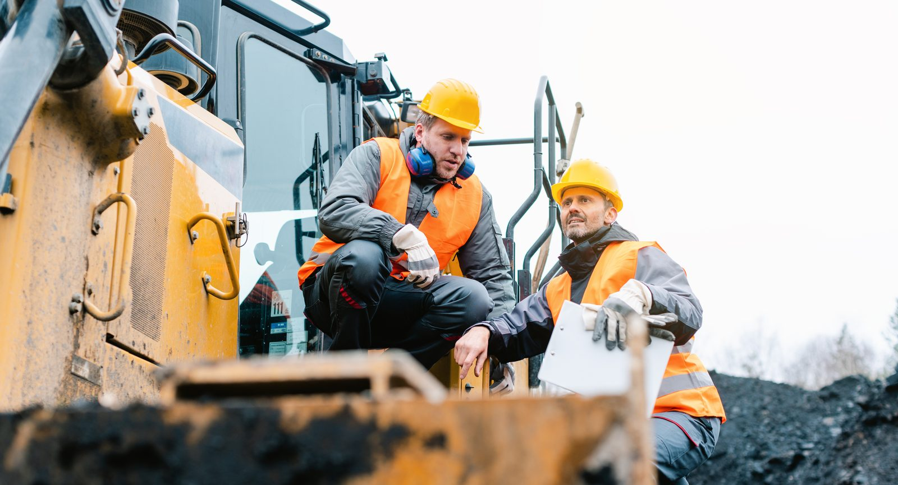
A shared operational understanding helps organisations coordinate resources, respond faster and make better decisions.
From operational data to operational insight
Operations generate enormous volumes of information every day.

Workforce activity
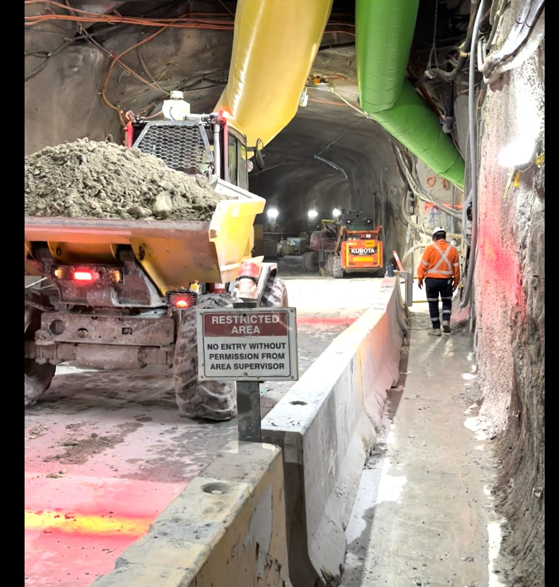
Vehicle movement
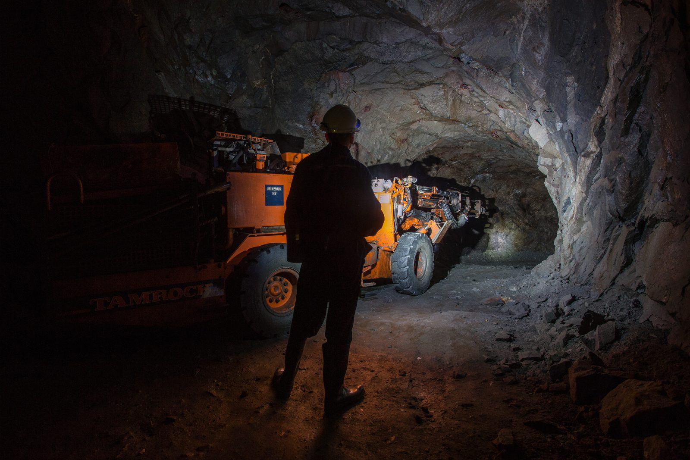
Environmental conditions
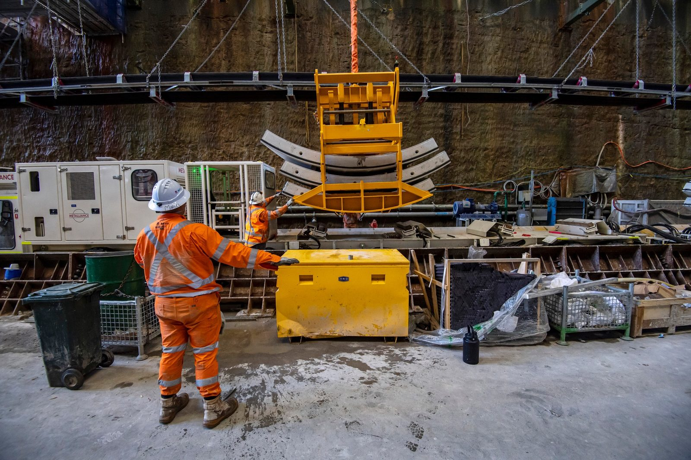
Production systems
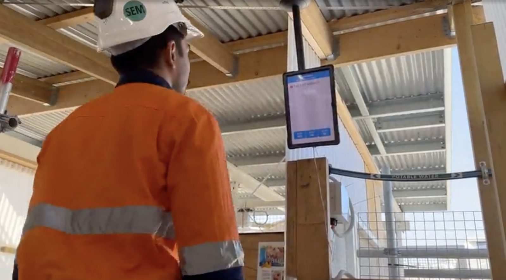
Safety events
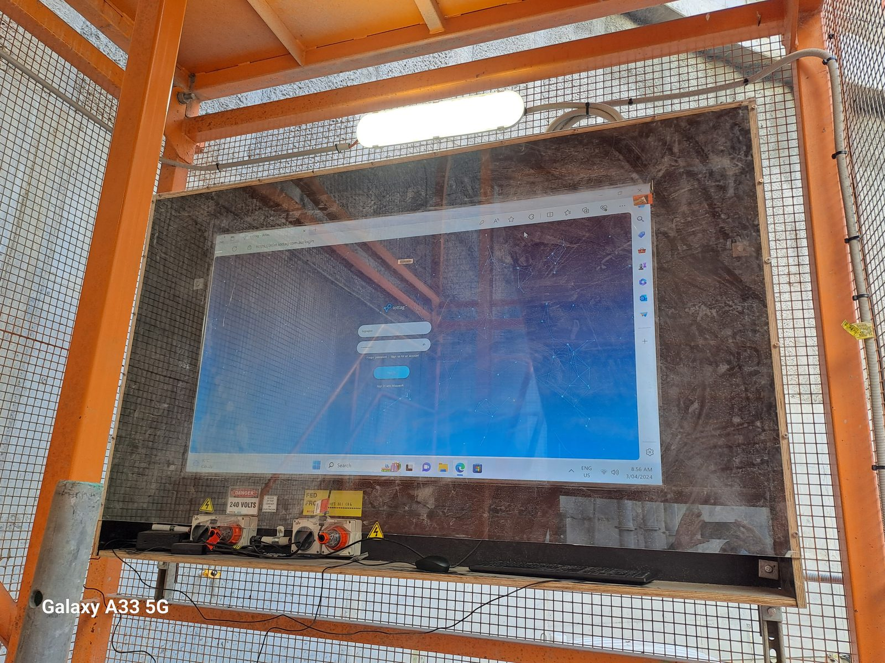
Infrastructure systems
Individually these systems provide valuable information.
The challenge is understanding how these factors interact and what they mean for the operation
The Operational Digital Twin continuously analyses information from across the operational environment, helping organisations identify relationships, dependencies and emerging operational conditions that may otherwise remain hidden.
Rather than simply presenting data, the platform helps transform operational information into meaningful operational insight.
Understanding operational interactions
Operational events rarely occur in isolation
For example:
While each condition may appear manageable independently, understanding the relationship between these conditions provides a clearer picture of what is happening across the operation.
The Operational Digital Twin continuously analyses these interactions and presents them within a shared operational context.
AI-powered operational understanding
One of the greatest challenges in operational environments is interpreting large volumes of information quickly.
The Operational Digital Twin uses AI to transform complex operational information into simple, human-readable operational narratives.
Instead of requiring users to interpret multiple dashboards, reports and alerts, the platform provides clear operational summaries explaining:
This helps operational teams, supervisors, management and executive stakeholders quickly understand changing conditions without requiring specialist interpretation.
Example summary
Ventilation Performance Alert
A ventilation fan in Zone 4 has stopped operating.
Reduced airflow is contributing to increasing temperatures and elevated gas concentrations within downstream work areas. Twenty-three personnel are currently operating within the affected zone.
Environmental conditions continue to trend upward and may influence workforce exposure and operational productivity if conditions persist.
Recommended Action:
Investigate ventilation status and review workforce deployment within affected areas.
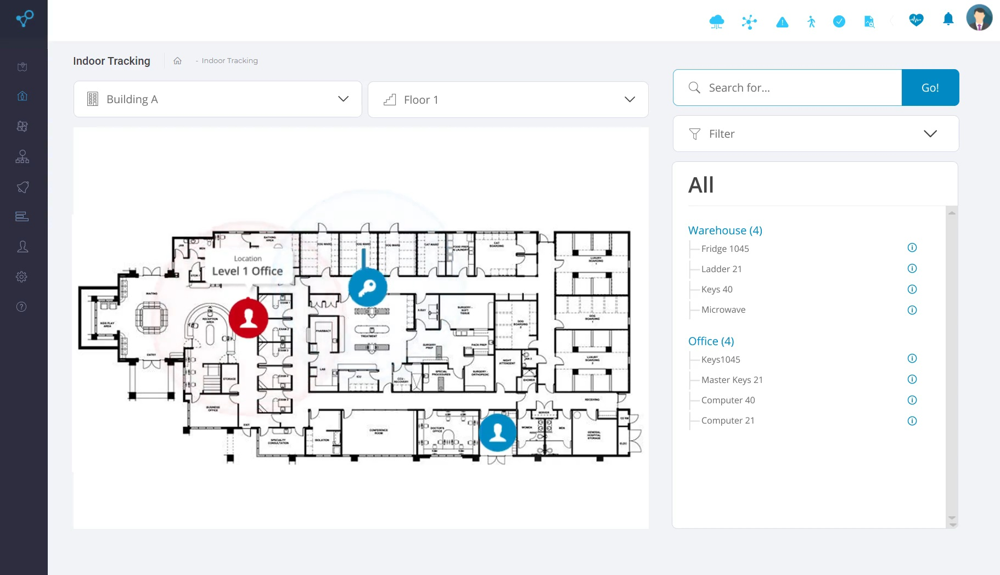
See Atlas SoftwareOperational coordination
When information is fragmented,
coordination becomes difficult.
The Operational Digital Twin provides a common operational picture that supports collaboration between operational teams, supervisors, management and leadership.
By providing visibility into workforce activity, fleet movement, operational events and changing conditions, organisations can coordinate resources more effectively and maintain awareness across the entire operation.
Improved situational awareness
Enhanced operational coordination
Reduced operational blind spots
Improved workforce accountability
Faster decision-making
More effective resource allocation
Supporting emergency response
In an emergency, clarity saves lives.
The ability to understand where people are, what conditions exist and how an event is evolving can significantly influence response effectiveness.
The Operational Digital Twin supports emergency response by providing a shared operational view that helps teams coordinate actions, understand workforce locations and maintain situational awareness during critical events.
Applications Included
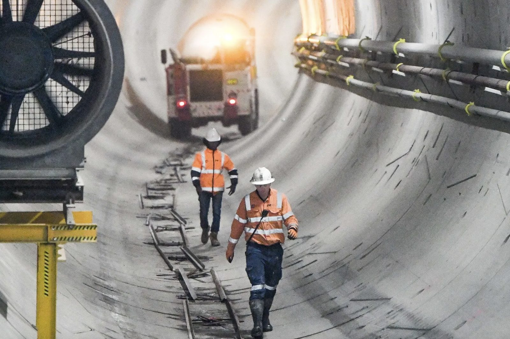
Emergency mustering
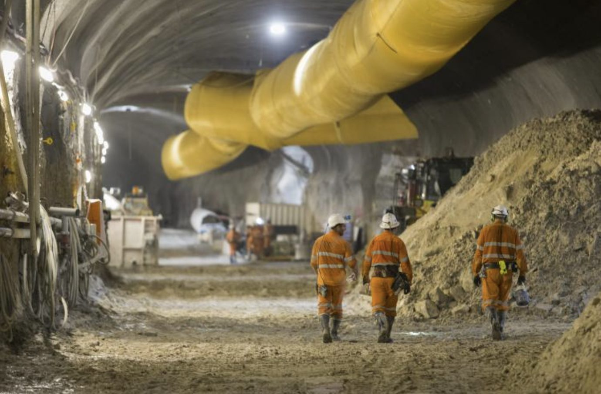
Incident coordination
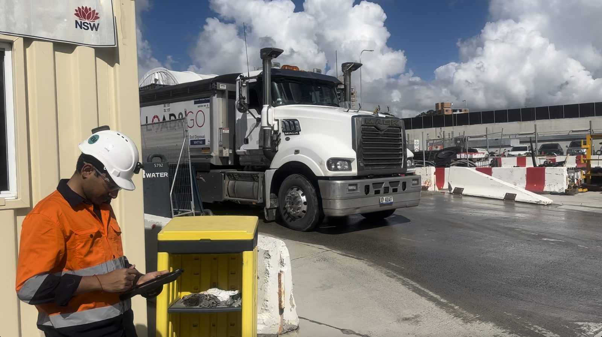
Vehicle coordination
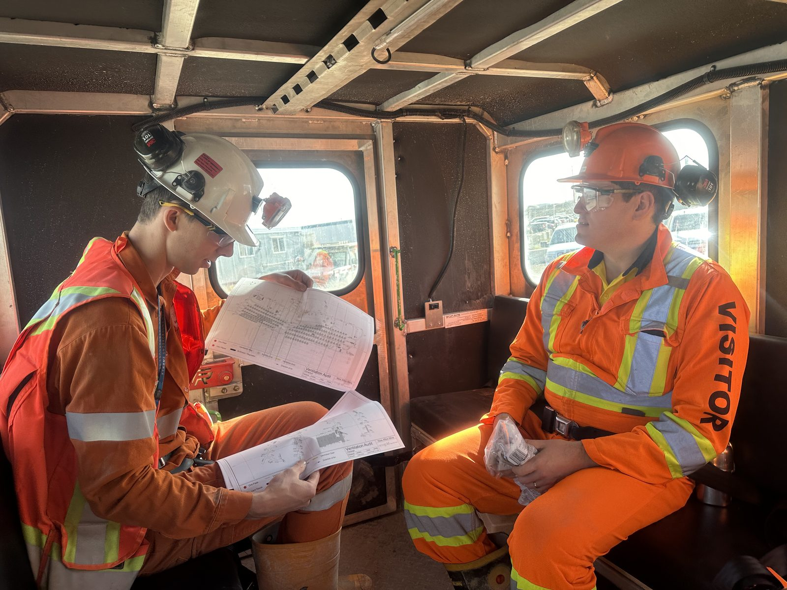
Personnel accountability
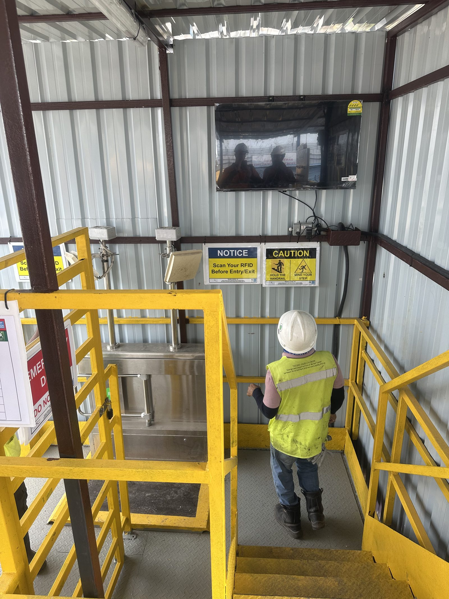
Evacuation management
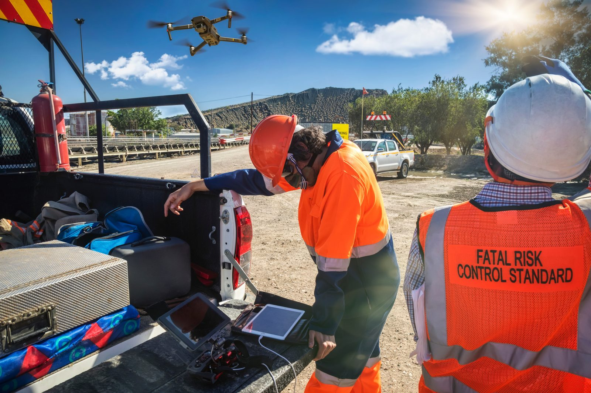
Operational communication
From site operations to executive visibility
Operational teams use the Operational Digital Twin to manage daily activities.
Leadership teams use it to understand broader operational performance.
By creating a shared operational understanding across projects, sites and operational environments, organisations gain visibility that supports governance, benchmarking and strategic decision-making.
Mining Structure
Contractor

Site Management

Corporate Leadership
Tunnelling & Infrastructure
Subcontractors
Main Contractor / JV

Asset Owner
The foundation of operational intelligence
Many operations require multiple positioning technologies working together, for example: